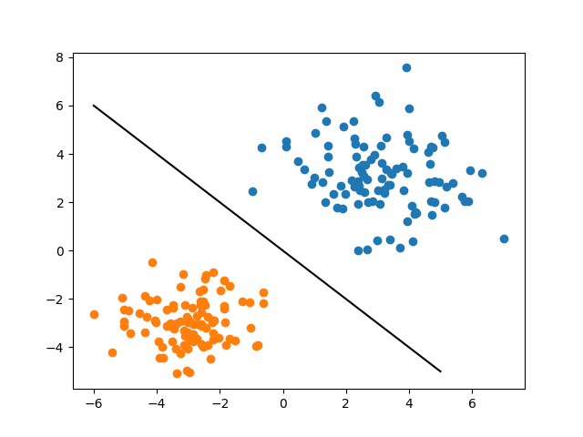
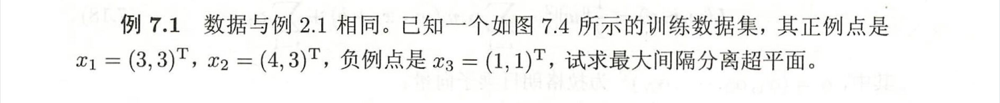
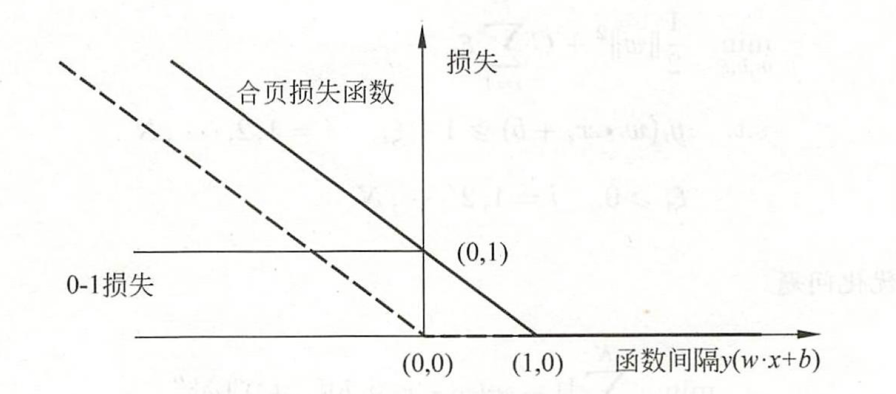

SVM
Last updated on July 4, 2022 pm
"很明显, 内容是抄来的."
"你是瞧不起李航还是瞧不起我?"
引言
没什么引言, 姑且谈谈什么是 函数间隔, 什么是 几何间隔 吧.
其实大部分来自于直觉和观察吧. 比如你看下面这幅图, 好看不?
我画的.

假设蓝色点为正例, 显然直线代表的是分界面, 并且从直观上感受: 对于某个蓝色点而言, 离分界面越远, 它是正例的可能性越高, 而 某个蓝色点离分界面越近, 它是正例可能性越小 (即被误判的可能性越高). 因此, 能不能使用一种方法, 或者是表达方式来展示这种直觉呢? 答案是 距离.
一般而言, 一个点距离分离超平面的远近可以表示分类预测的确信程度. 设分离超平面为 \(w^Tx+b=0\), 则 \(|w^Tx+b|\) 表示了某个样本点 \(x\) 与超平面的距离. 而 \(|w^Tx+b|\) 的符号与类标签 \(y\in{-1,1}\) 是否一致能够表示分类是否正确. 所以, 用 \[ y(w^Tx+b) \] 可以表示分类的正确性和确信度. 这便是所谓的函数间隔.
函数间隔
训练集 \(T\), 超平面 \((w, b)\), \((w, b)\) 关于某样本点 \((x_i, y_i)\) 的函数间隔定义为 \[ \hat{\gamma}_i=y_i(w^Tx_i+b) \]
而超平面 \((w, b)\) 关于 \(T\) 的函数间隔定义为 \[ \hat{\gamma}=min_{i=1,\cdots,n}\hat{\gamma}_i \]
考虑到 \(\omega\) 和 \(b\) 是齐次的, 同时增大或减小时会影响到函数间隔, 因此引出几何间隔的概念:
几何间隔
训练集 \(T\), 超平面 \((w, b)\), \((w, b)\) 关于某样本点 \((x_i, y_i)\) 的函数间隔定义为 \[ \gamma_i=y_i(\frac{w^T}{||w||}x_i+\frac{b}{||w||}) \]
而超平面 \((w, b)\) 关于 \(T\) 的函数间隔定义为 \[ \gamma=min_{i=1,\cdots,n}\hat{\gamma} \]
正题
硬间隔线性SVM
SVM要求最大化几何间隔, 能使超平面以最大的置信度将样本分类 \[ \begin{aligned} max_{w,b}\ \ &\gamma \\ s.t.\ \ &y_i(\frac{w^T}{||w||}x_i+\frac{b}{||w||}) \geq \gamma,\ \ i=1,\cdots,n \end{aligned} \]
将几何间隔化为函数间隔, \(\gamma=\frac{\hat{\gamma}}{||w||}\), 并考虑到函数间隔与 \((w,b)\) 无关, 取 \(\hat{\gamma}=1\), 得到如下二次规划: \[ \begin{aligned} min_{w,b}\ \ &\frac{1}{2}||w||^2 \\ s.t.\ \ &y_i(w^Tx_i+b) \geq 1,\ \ i=1,\cdots,n \end{aligned} \]
优化该问题:
\(Lagrange\) 函数: \[ L(w,b,\lambda)=\frac{1}{2}w^Tw+\sum_i\lambda-\sum_i\lambda_i y_i(w^Tx_i + b) \] 对参数求梯度: \[ \begin{aligned} \frac{\partial}{\partial w}L&=w-\sum_i\lambda_i y_i x_i = 0 &\qquad(1)\\ \frac{\partial}{\partial b}L&=-\sum_i\lambda_i y_i = 0 &\qquad(2) \end{aligned} \] 带入 \(Lagrange\) 函数得对偶函数 (即拉格朗日函数关于参数的极小值): \[ -\frac{1}{2}\sum_{i,j}\lambda_i\lambda_j y_i y_j x_i^Tx_j + \sum_i\lambda_i \] 得原问题的对偶问题: \[ \begin{aligned} max_{\lambda}\ \ &-\frac{1}{2}\sum_{i,j}\lambda_i\lambda_j y_i y_j x_i^Tx_j + \sum_i\lambda_i \\ s.t.\ \ &\sum_i\lambda_i y_i = 0 \\ &\lambda\geq 0 \end{aligned} \] 或: \[ \begin{aligned} min_{\lambda}\ \ &\frac{1}{2}\sum_{i,j}\lambda_i\lambda_j y_i y_j x_i^Tx_j - \sum_i\lambda_i \\ s.t.\ \ &\sum_i\lambda_i y_i = 0 \\ &\lambda\geq 0 \end{aligned} \] 由 \(KKT\) 条件: \[ \begin{aligned} \nabla_{w;b}L&=0 \\ \lambda_i&\geq 0 \\ y_i(w^Tx_i+b) &\geq 1,\ \ i=1,\cdots,n \\ \lambda_i(y_i(w_*^Tx_i + b_*) - 1) &= 0 \end{aligned} \] 考虑到 \(y_i^2=1\) 得: \[ \begin{aligned} w_*&=\sum_i\lambda_i y_i x_i \\ b_*&=y_i-\sum_i \lambda_i y_i x_i^Tx_j \end{aligned} \] 此处的 \(\lambda_i\) 表示最优的 \(\lambda_*\).
因此得到分离超平面: \[ y(x) = (\sum_i\lambda_i y_i x_i)^Tx + y_i-\sum_i \lambda_i y_i x_i^Tx_j \] 此处的 \(\lambda_i\) 表示最优的 \(\lambda_*\).
最后的决策函数可以定义为: \[ f(x) = sgn (y(x)) \]
来个例题: 用二次规划和对偶问题两种方式求解.

答案: \[ \frac{1}{2}x^{(1)}+\frac{1}{2}x^{(2)}-2=0 \]
软间隔线性SVM
数据集线性不可分, 设置松弛变量 \(\xi\). 线性不可分表示部分数据不能满足函数间隔大于等于1. 但我们希望添加松弛变量后可以满足. \[ y_i(w^Tx_i+b)\geq 1-\xi_i \] 但我们不允许无限制地引入松弛变量, 因此需要设置一定的代价: \[ C\sum_i\xi_i,\ \ C > 0 \] 因此原问题等价于下述二次规划: \[ \begin{aligned} min_{w,b}\ \ &\frac{1}{2}||w||^2 + C\sum_i\xi_i \\ s.t.\ \ &y_i(w^Tx_i+b) \geq 1 - \xi_i,\ \ i=1,\cdots,n \\ &\xi_i \geq 0 \end{aligned} \] 对偶问题: \[ \begin{aligned} max_{\lambda}\ \ &-\frac{1}{2}\sum_{i,j}\lambda_i\lambda_j y_i y_j x_i^Tx_j + \sum_i\lambda_i \\ s.t.\ \ &\sum_i\lambda_i y_i = 0 \\ &C-\lambda_i-\mu_i = 0 \\ &\lambda_i, \mu_i \geq 0 \end{aligned} \] 其中 \(\lambda_i\) 是对间隔引入的乘子, \(\mu_i\) 是对松弛变量引入的乘子. 解出最优解: \[ \begin{aligned} w_*&=\sum_i\lambda_i y_i x_i \\ b_*&=y_i-\sum_i \lambda_i y_i x_i^Tx_j \end{aligned} \] 此处的 \(\lambda_i\) 表示最优的 \(\lambda_*\).
支持向量
对于硬间隔, 支持向量是使 \(\lambda > 0\) 的样本, 由互补松弛性, 它们满足 \(y_i(w^Tx_i+b) = 1\), 因此这些样本落在间隔边界, 将分离超平面"支持"起来.
对于软间隔, 支持向量是 使 \(0 < \lambda < C\) 的样本, 由互补松弛性, 此时 \(y_i(w^Tx_i+b) = 1\) 且 \(\xi_i = 0\); 同时, 若 \(\lambda = C\) 即 \(\mu = 0\), 即 \(\xi_i \neq 0\):
\(0 < \xi_i < 1\): 分类正确
\(\xi_i = 1\): 在分离超平面上;
\(\xi_i > 1\): 误分
合页损失 (hinge loss)
线性支持向量机的原始优化问题 \[ \begin{aligned} min_{w,b}\ \ &\frac{1}{2}||w||^2 + C\sum_i\xi_i \\ s.t.\ \ &y_i(w^Tx_i+b) \geq 1 - \xi_i,\ \ i=1,\cdots,n \\ &\xi_i \geq 0 \end{aligned} \] 等价于问题 \[ min_{w, b}\ \ \sum_i[(1-y_i(w^Tx_i+b))]_++\lambda||w||_2^2 \] 其中 \[ [z]_+= \left \{ \begin{aligned} z&,\quad z>0 \\ 0&,\quad z\leq 0 \end{aligned} \right . \] 称为合页损失. 后面的问题可以理解为: 当间隔大于1时, 无损失; 当间隔小于1时给损失; 同时第二项是参数的正则项.
对比感知机, 线性SVM要求分类大于一定的置信度后, 才能将损失设置为0, 而感知机无置信度, 见下图

Kernel Trick
从线性SVM不能解决非线性问题的角度出发, 引入了核技巧, 从而得到非线性SVM.
核技巧的思想是将原特征空间经过 非线性映射, 映射至一个特征空间, 使得原特征空间中的超曲面对应与映射后特征空间的的超平面. 记非线性映射为 \(\phi\). 事实上, 该非线性映射将输入空间 (欧式空间或离散空间) 映射至一个特征空间 (Hilbert空间). 即: \[ \phi(x):X \rightarrow H \] 但是, 由于 \(\phi\) 不好构造, 而直接计算内积 \(\phi(x)^T\phi(y)\) 比先计算 \(\phi(x)\) 再计算内积容易, 因此引入 核函数 的概念:
核函数
称 \(K(x,z)\) 为核函数, 如果满足: \(\forall x,z\in X, \exists \phi(x):X \rightarrow H,\ s.t.\ K(x,z)=\phi(x)\cdot\phi(z)\)
正定核
能否不用构造 \(\phi\) 就可以判断某个函数是否是核函数?
一般, 核函数指正定核函数.
Thm
\(K(x,z):X\times X\rightarrow R\) 是对称函数, 则 \(K\) 为正定核的充要条件为 \(K\) 对应的 \(Gram\) 矩阵半正定.
*扩展: \(Mercer\) 核
常用核函数
多项式核: \[ K(x,z)=(x^Tz+1)^p \] 高斯核: \[ K(x,z)=exp(-\frac{||x-z||^2}{2\sigma^2}) \] 拉普拉斯核: \[ K(x,z)=exp(-\frac{||x-z||}{\sigma}) \] sigmoid核: \[ K(x,z)=tanh(x^Tz+1) \]
SMO算法
SMO: 序列最小最优算法
思想是将原问题不断分解为二次规划的子问题, 每次从优化变量中取两个, 其中一个严重违背 KKT 条件, 另一个满足; 直到所有的变量都满足 KKT 条件.